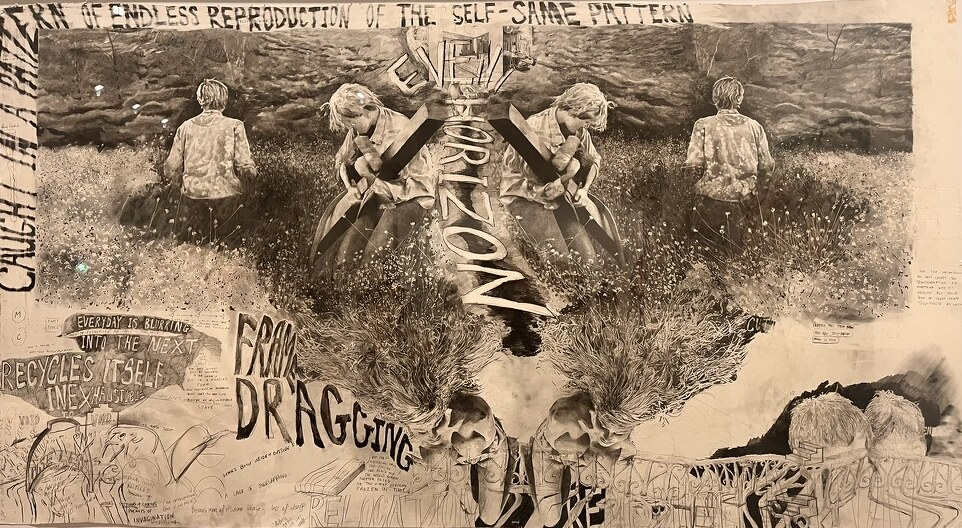
Kaari Upson, Event Horizon, 2017 · graphite, ink and gesso on paper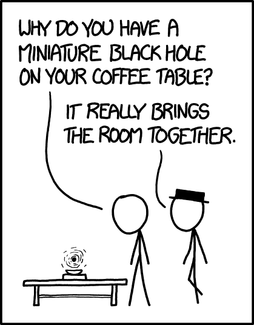
xkcd 1680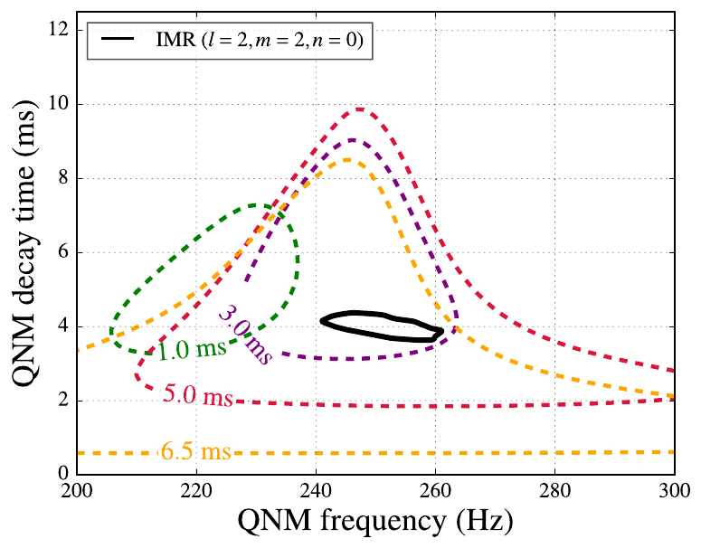
LVK, PRL 116 221101 (1602.03841)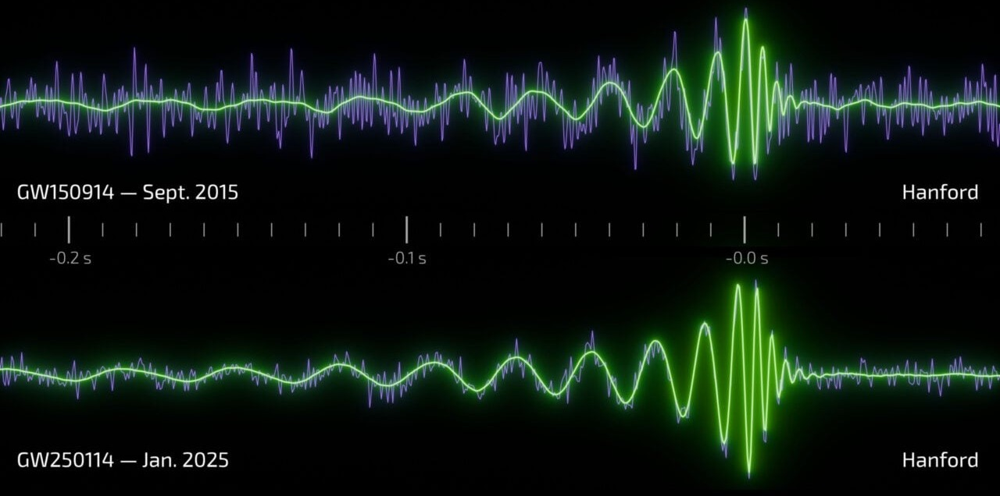
LIGO / J. Tissino (GSSI) / R. Hurt (Caltech-IPAC)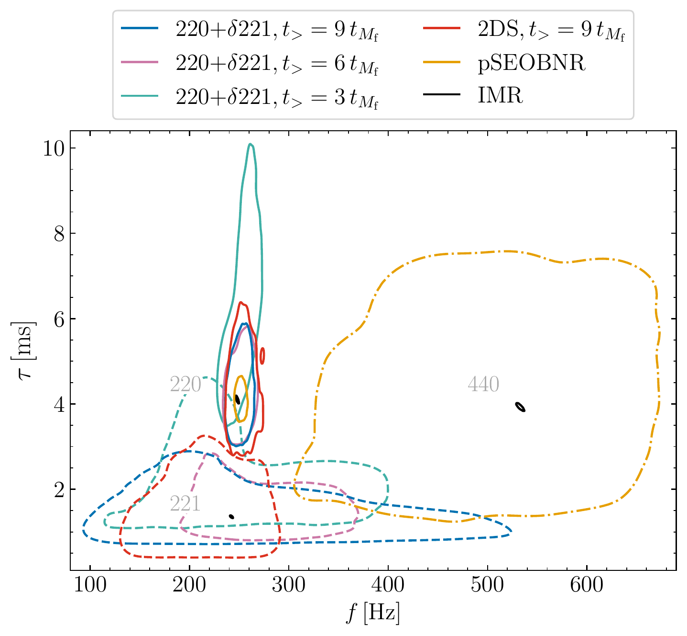
LVK (2509.08099)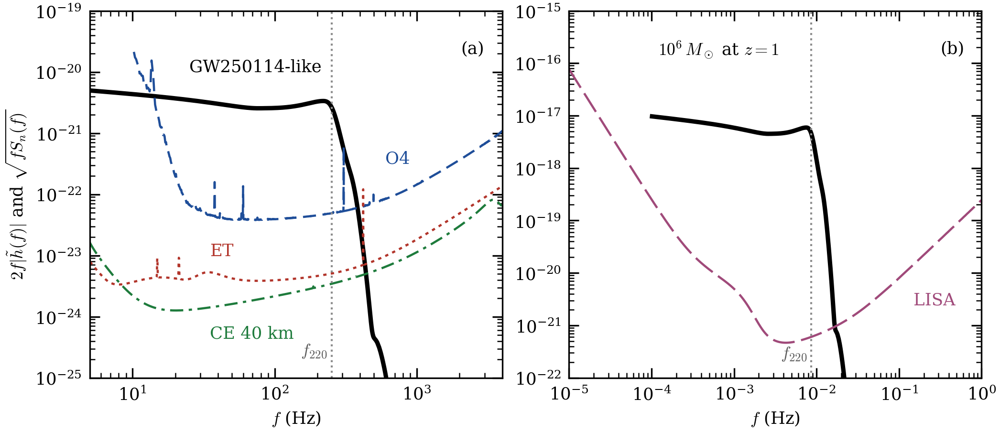
IMR: IMRPhenomXPHM (Pratten+ 2004.06503) · noise: gwfast (2207.02771) / Robson, Cornish & Liu (1803.01944)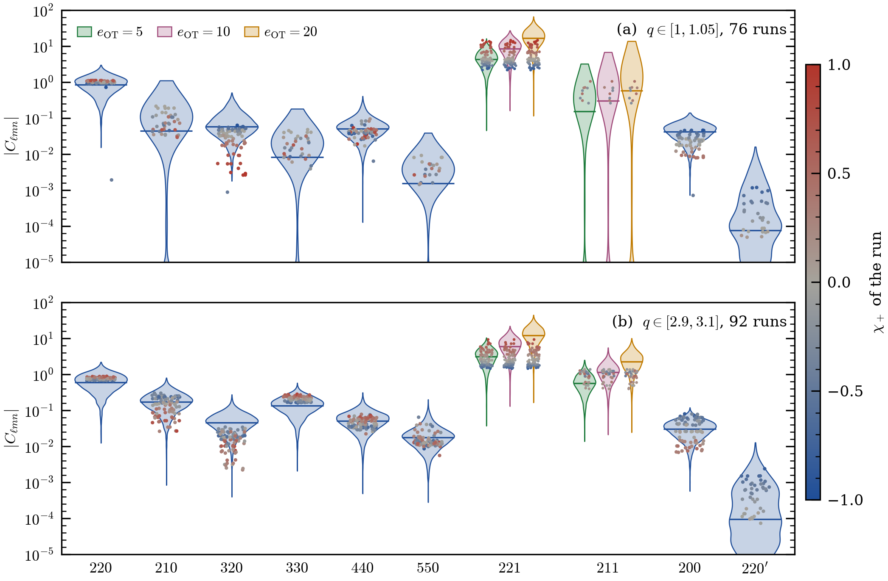
violins: our prior · dots: jaxqualin fits to SXS (Cheung+ 2310.04489)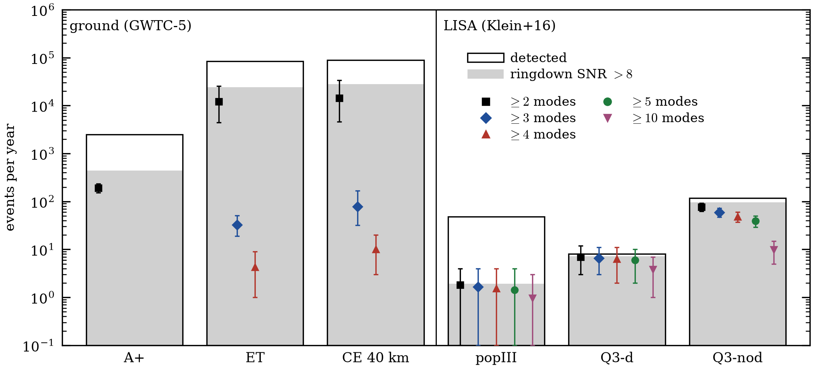
ground: GWTC-5 population · LISA: Klein+ (1511.05581) · Redondo-Yuste, Yi & Berti (to appear)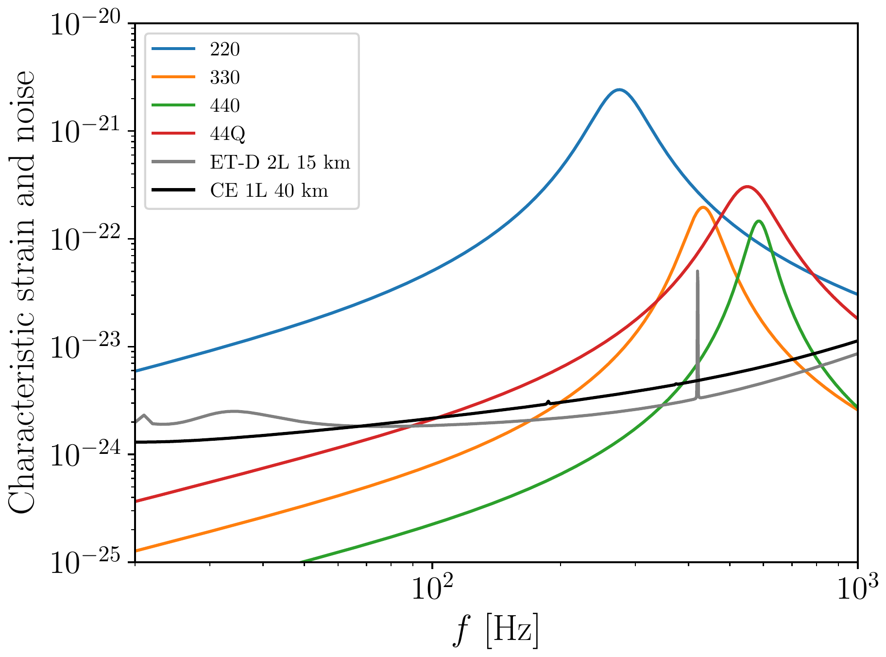
Lagos, Andrade, Rafecas-Ventosa & Hui (2411.02264): a GW150914-like event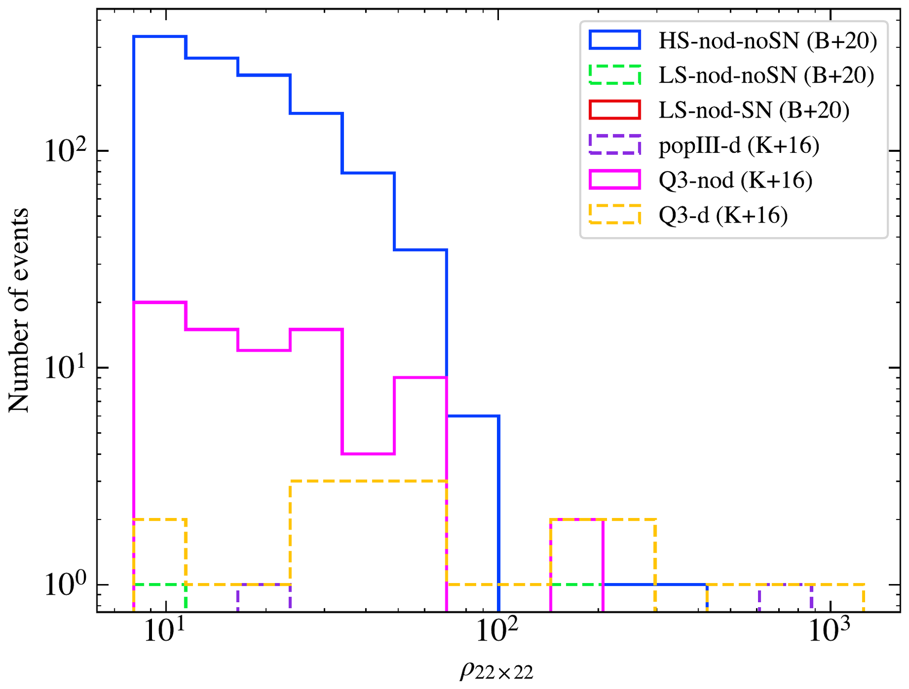
Yi+ (2403.09767): LISA, 4 years, events with a detectable 22×22 mode